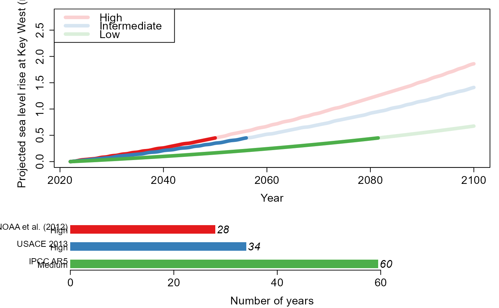
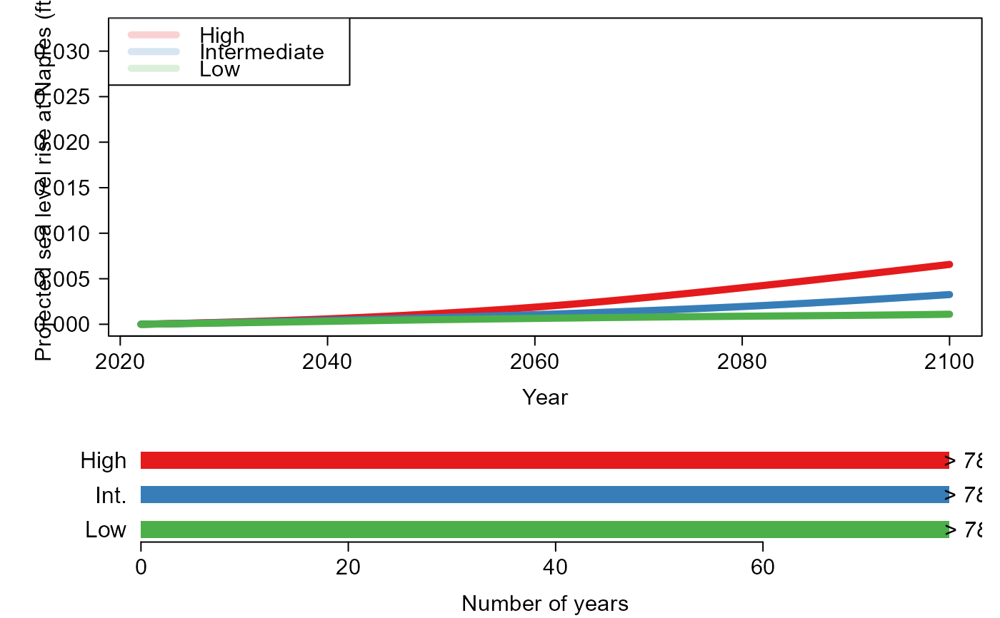

Sea level rise scenarios
SLR_Scenarios.RdTime (in years) for a specified change in sea level according to various sea level projections. Contained within the function are: (1) the three scenarios for Key West in the Southeast Florida Regional Climate Change Compact, (2) those for Miami Beach in "Global and Regional Sea Level Rise Scenarios for the United States" NOAA et al. (2017) and (3) those in the Interagency Sea Level Rise Scenario Tool (NOAA et al. 2022) for Naples and Miami Beach. Users can also input scenarios of their choice.
SLR_Scenarios(
SeaLevelRise,
Scenario = "Compact",
Unit = "m",
Year = 2022,
Location = "Key West",
New_Scenario = NA
)Arguments
- SeaLevelRise
Numeric vector of length one, specifying the sea level rise required.
- Scenario
Character vector of length one, specifying the sea level rise scenarios to be adopted. Options are
"Compact"for those for Key West in the Southeast Florida Regional Climate Change Compact,"NOAA2017"for those in "Global and Regional Sea Level Rise Scenarios for the United States" at Miami Beach used in Jane et al. (2020),"NOAA2022"for those for Miami Beach and Naples in the Interagency Sea Level Rise Scenario Tool, orNAif a set of scenarios are specified by the user (seeNew_Scenario).- Unit
Character vector of length one, specifying units of
SeaLevelRise. Options are metersmand Inches"Inches". Default is"m".- Year
Numeric vector of length one, specifying the current year. Default is
2022.- Location
Character vector of length one, specifying the location associated with the scenarios. Projections for
"Key West"(Compact),"Miami Beach"(NOAA2017 AND NOAA2022) and"Naples"(NOAA2022) are contained within the package. If a user specified scenarios are employed, set to the name of the site. Default is"Key West".- New_Scenario
Dataframe containing sea level rise scenarios. First column must be a year and the scenarios provided in the remaining columns. For the color scale to correlate with the severity of the scenarios they should be listed from most to least severe i.e., the highest SLR scenario should appear in column 2. All entries must be numeric. Default
NA.
Value
For "Compact", "NOAA2017" and "NOAA2022" a list length of time for SeaLevelRise of sea level rise is expected to arise under the High, Intermediate and Low. For user specified scenarios, the time for SeaLevelRise to occur under each is returned as SLR_Year. Upper panel: A plot of the scenarios. Scenarios are in bold until the time the SeaLevelRise is reached and are transparent thereafter. Lower panel: A plot showing the number of years before is expected to occur.
Examples
#Calculate the estimated time required for 0.45m of SLR in Key West according to the scenarios
#in the Southeast Florida Regional Climate Change Compact
SLR_Scenarios(0.45)

#> $High
#> [1] 2050
#>
#> $Intermediate
#> [1] 2056
#>
#> $Low
#> [1] 2082
#>
#Calculate the estimated time required for 0.8 inches of SLR in Naples according
#to the scenarios in the 2022 Interagency Sea Level Rise Scenario Tool
SLR_Scenarios(0.45,Scenario="NOAA2022", Unit = "Inches", Location="Naples")

#> $High
#> [1] 2100
#>
#> $Intermediate
#> [1] 2100
#>
#> $Low
#> [1] 2100
#>
#Read in the scenarios for Fort Myers downloaded
#from https://sealevel.nasa.gov/task-force-scenario-tool/?psmsl_id=1106
SeaLevelRise.2022<-sl_taskforce_scenarios_psmsl_id_1106_Fort_Myers
#Convert data to the appropriate format for the SLRScenarios function
#i.e. first column years, following columns the scenarios most to least extreme,
#converted from millimeters to meters
SeaLevelRise.2022_input<-data.frame(Year=seq(2020,2150,10),
"High"=as.numeric(SeaLevelRise.2022[14,-(1:5)])/1000,
"Medium"=as.numeric(SeaLevelRise.2022[8,-(1:5)])/1000,
"Low"=as.numeric(SeaLevelRise.2022[2,-(1:5)])/1000)
#Calculate the estimated time required for 0.8 inches of SLR at Fort Myers
SLR_Scenarios(SeaLevelRise=0.8, Scenario="Other", Unit = "m", Year=2022,
Location="Fort Myers", New_Scenario=SeaLevelRise.2022_input)
 #> $SLR_Year
#> [1] 2150 2085 2064
#>
#> $SLR_Year
#> [1] 2150 2085 2064
#>